五分钟评审路径：先看人，再看空间，最后看能否放行
这不是把 23 张卡片再做一遍摘要，而是给评审一条不迷路的验收顺序。每一步都能回到包内图件、JSON、runner 或责任记录；缺少现场基线、接收人或授权时，结论保持 HOLD。
三处重点区，一条共行环
临时边界轨道和公交是骨干。企业到岗、居民日常、轨道换乘和路缘服务由三类接驳与一张时段账本串联；“环”是服务关系，不是一条未经论证的新道路。
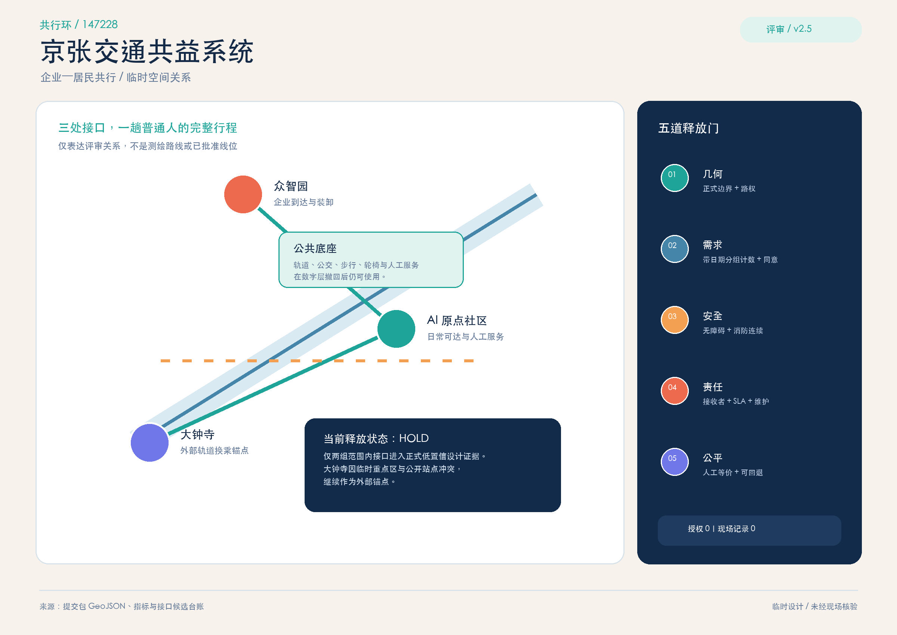
统筹 → 总体 → 重点区
同一 revision统筹层处理跨界通勤和产业协作，总体层组织用地与多方式网络，重点区层只放经批准的可逆测试。边界变化必须触发图层、指标、图纸和页面整包重算。
三区两翼，各有责任
设计角色众智园负责受控企业到岗，AI 原点负责完整日常行程，大钟寺负责公共换乘界面；中关村科技服务翼提供专业接口，小月河场景翼只承接可逆故障演练。
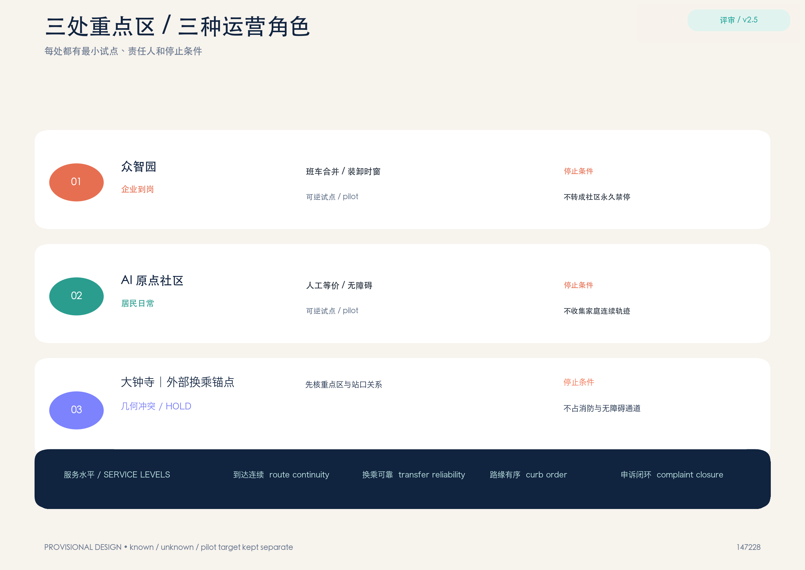
用地比例从 GeoJSON 实算
非控规指标四个设计面以 11,412,825.386 m² 临时范围为同一分母，分别为 23.4347%、22.6880%、29.4943% 和 24.3830%。图上同步标出面积、置信边界和复算路径。
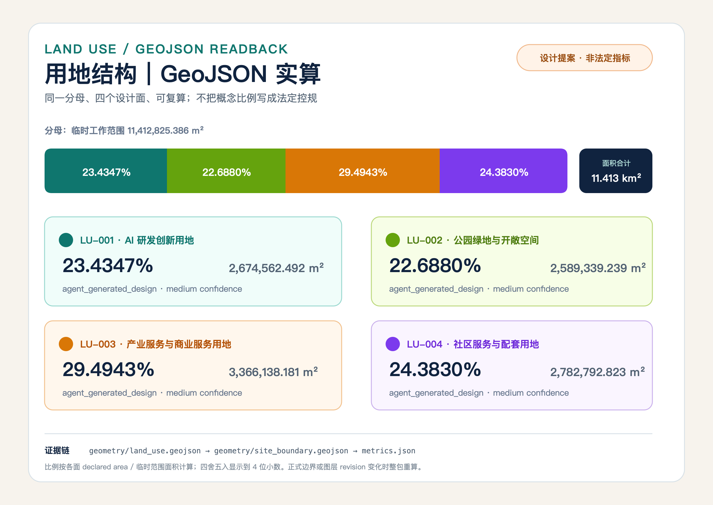
轨道 / 公交 / 步行 / 路缘
普通路径优先路缘只有 open、booked、service、human-only 和 emergency 五种状态。每次变更都必须写责任人、结束时间、清空动作、替代路线和投诉入口。
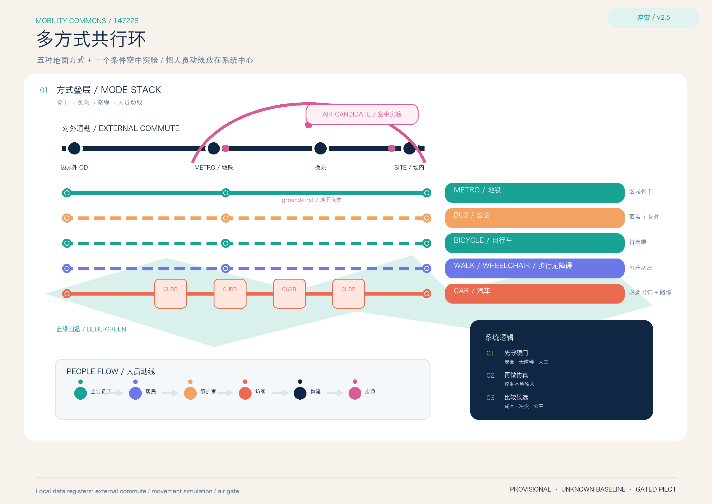
蓝绿空间先做交通回退
不迁移绩效遮阴、停歇、雨雪回退和夜间识别先服务完整行程。没有热环境、排水、生态和维护基线时，不宣称健康、防洪或降温效果。
建筑只作为首层接口
不定体量站口、过街、坡道、候车、骑行停放和人工服务台可以先做可逆接口；没有测绘、结构、消防和日照资料时，不提出容积率、高度或拆除定案。
登记 → 小试 → 复核 → 停止/扩展
可撤回P0 建基线，P1 做普通路线与路缘小试，P2 只在交通、消防、无障碍、隐私、运营和维护证据签字后考虑条件扩展。角色缺失时回到 HOLD。
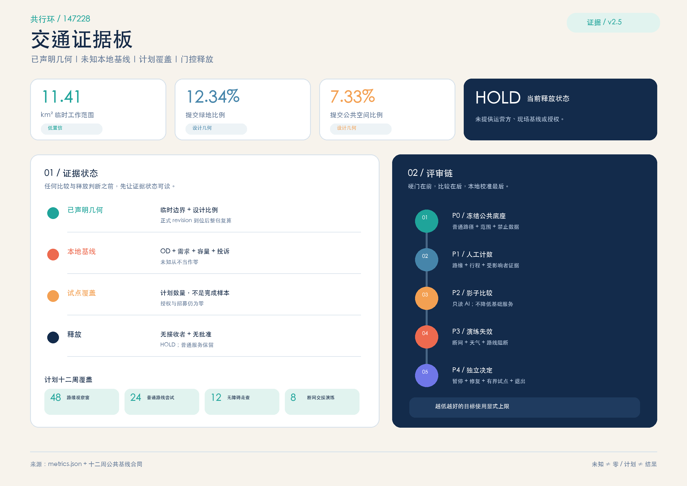
AI 只做受约束的服务
拒绝也可用AI 聚合需求、解释冲突、提供选项并准备回退；拒绝算法、断网或设备故障时，人工、电话、纸面和公共交通路径保持等价。
已知 / 未知 / 计划分母
不混写空间值来自提交几何；48 个路缘观察窗、24 次普通路线、12 次无障碍走查和 8 次交接演练只是未来覆盖计划。需求、占用、可达和投诉现场值仍为空。
任务不再共用同一套证据
23 项逐条公告任务与 agent.1—agent.6 分别绑定章节、图层、指标、图纸、视觉卡、来源、标准、假设和自检门；任务书六项在本页后半段另设快速入口。
自检只证明包可复核
非官方评分确定性、空间、视觉和专业证据门只检查文件是否自洽；它们不证明现场绩效、正式许可、维护者分数或获奖。69 分高水位版本保持隔离。
来源只迁移方法
六项新增核验Complete Trip、DART GoLink、残障首末端、完整行程链、上海轮椅公交和 FHWA 路缘资料分别支撑协作、分阶段测试、站外障碍和空间冲突比较；不迁移机构、比例或绩效。
缺口本身也是证据
17 项假设边界、需求、居民体验、路缘、站点、无障碍、运营、隐私、接驳、蓝绿、充电、仿真和现场试点均有独立假设；不允许用论文、OSM 或概念几何替代本地测量。
多方式网络 / 对外通勤 / 条件空中实验
先守硬门企业员工、居民、照护者、访客、物流、维护、夜班和应急响应者按分组 OD 与时段建模。空中出行只在空域、适航、运营、安全、保险、气象、消防、噪声和公众参与全部通过后才可能进入低频、地面优先的候选实验。
透明沙盘，不是现状基线
合成输入1,000 人归一化设计单位只用于比较无协同高峰、多方式路缘协同、天气地面回退和被监管闸门阻断的空中候选。任何输出都要等本地信号、站点、行为和流量校准。
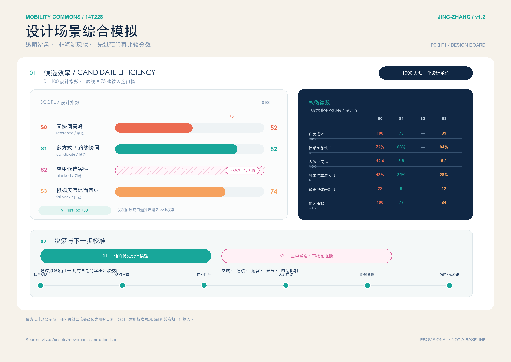
三处交通服务接口
现场值为 0众智园、AI 原点和大钟寺各承担一段服务责任，同时展示分母、非 AI 等价路径、拒绝条件和人工回退。真实路线观察、责任确认和授权尚未开始。
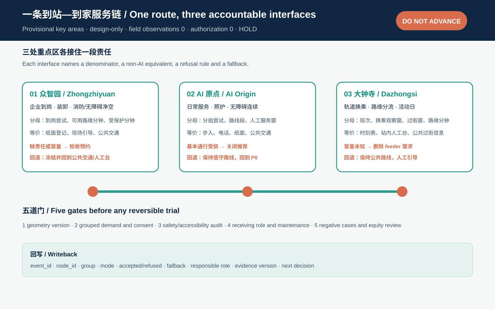
首 168 小时与首 12 周
默认 HOLDH1 把众智园、AI 原点的 2 条待核顺序和 6 个候选点绑定到正式几何，并把大钟寺 4 个候选对象明确留在正式图层之外。每个窗口同时写清接收人、保留证据、停止条件和停止后的普通路径；168 小时只形成继续取证、修复或撤回的收据。
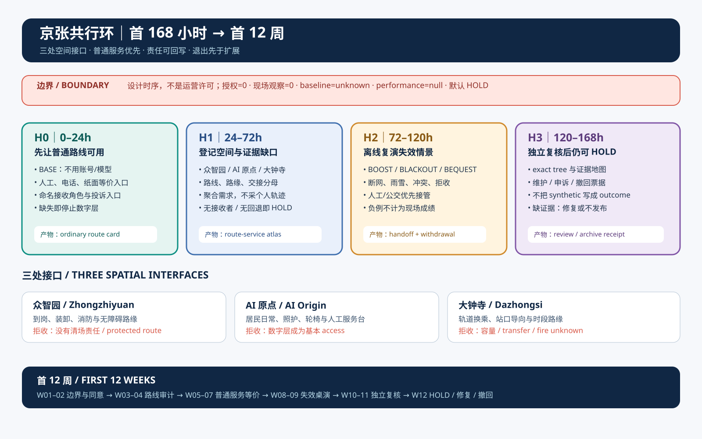
一日连续性回执：七环全过
不看平均分出门前信息、建筑出口、首段步行或轮椅路线、过街与站口、上车换乘、末段路线、目的地入口与回程必须逐环通过。任何一环失败，其他环节的平均成绩不能冲抵。
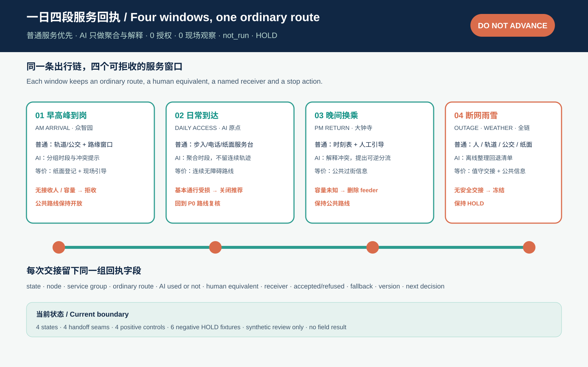
任务书 agent.1—agent.6
六项索引总体命名、创新生态、AI+ 场景、公共空间与候选地标、铁路时刻—中关村协作—公共收据叙事，以及季度审计与年度运营候选，都有首个交付物和专业深化边界。
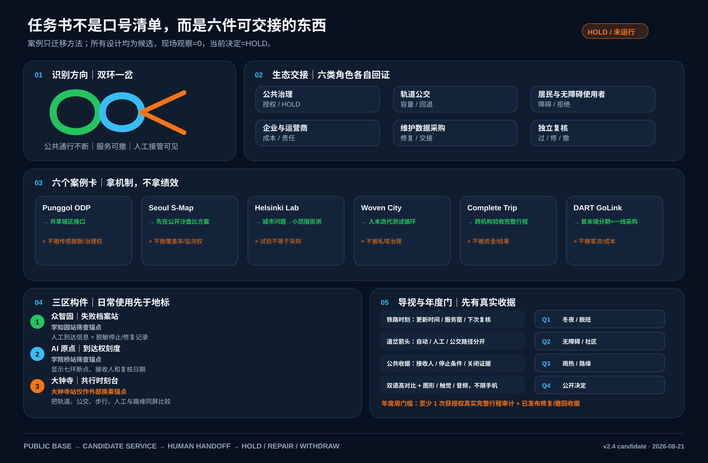
责任交接与公众底线
无人接手即停公共交通、无障碍、路缘、数据、公众申诉和独立复核六个岗位必须逐一确认。缺一项不自动补位，系统回到人工、电话、纸面和公共交通基本路径。
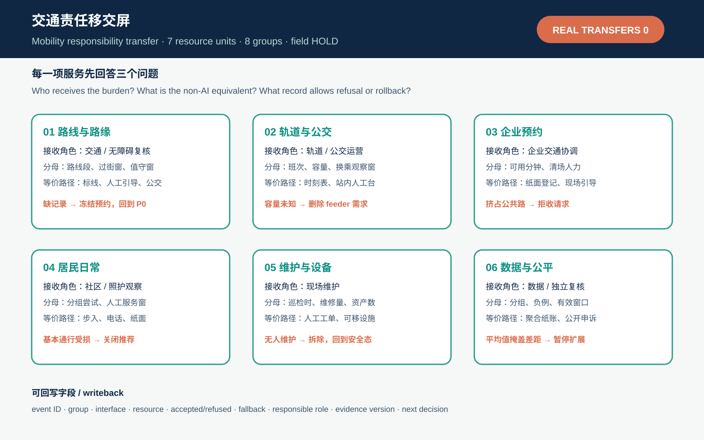
公开底图只把 P0 审计点落下来
非现场核验公开底图先登记站口、过街与路缘审计顺序；其中仅众智园、AI 原点 6 点 2 线同时落在临时 SITE 与对应 key-area 内，按低置信设计要素进入正式图层。大钟寺 3 点 1 线因约 2.31 km 边界冲突保持视觉背景。三个接口原型再说明进入、接管和撤回，四个系统选项裁决地面公共基线；所有尺度都是审阅标签。
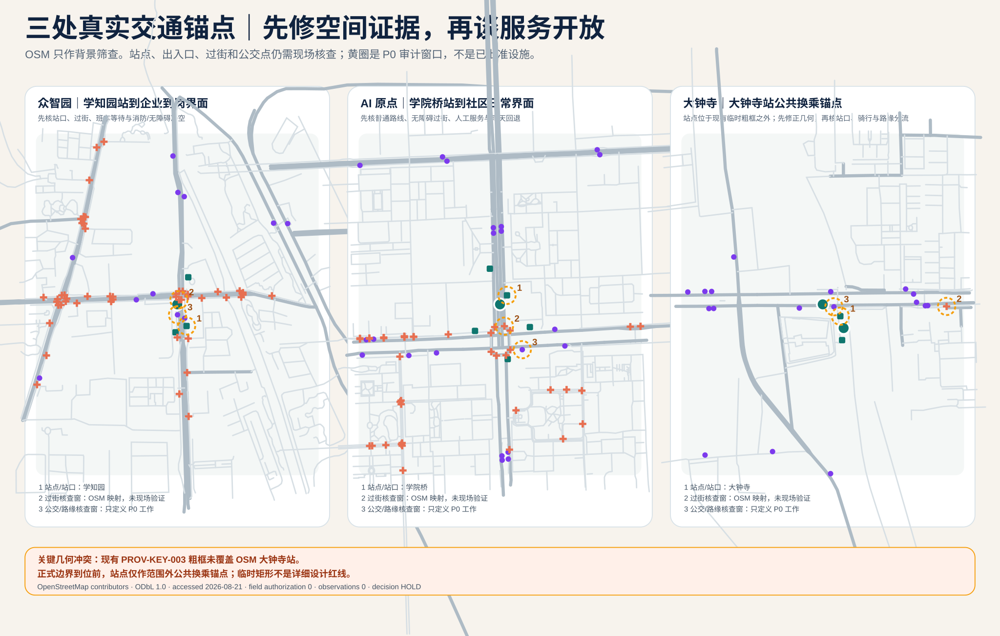
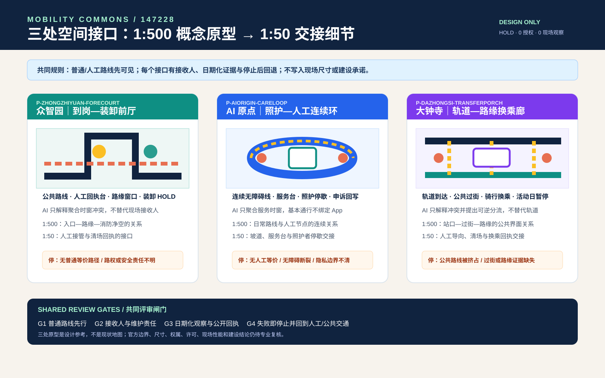
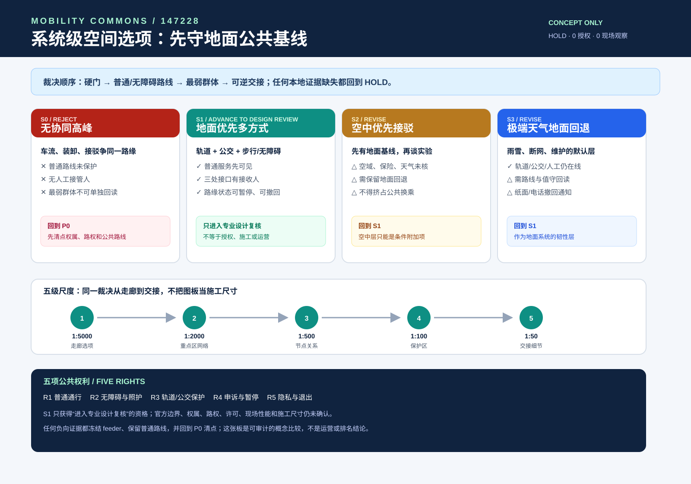
案例、识别、生态、构件、导视、日历各自交付
六件实物六张案例卡同时写“迁移什么 / 不迁移什么”；双环一岔区分公共通行、候选服务和人工接管；六类参与者都要交回证据；三区构件先承担日常任务；年度周必须等一趟获授权真实行程审计及修复/撤回收据。